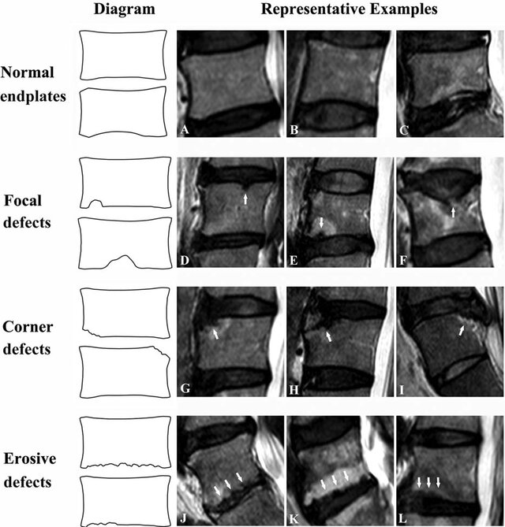

Adapted from: Feng Z, Liu Y, Yang G, Wang Y, et al. Lumbar Vertebral Endplate Defects on Magnetic Resonance Images: Classification, Distribution Patterns, and Associations with Modic Changes and Disc Degeneration, Spine (October 2017; Accessed on 03 Jan 2026) https://doi.org/10.1097/BRS.0000000000002450
1) Description of Measurement
Vertebral endplate defects are structural disruptions of the cartilaginous and bony endplates that cover the superior and inferior surfaces of vertebral bodies. These defects include several distinct morphologic types, such as Schmorl's nodes, fractures, erosions, calcifications, and irregular or jagged surfaces. These findings may reflect endplate weakness or acute axial loading and may be incidental or symptomatic, depending on acuity.
2) Instructions to Measure
Use sagittal T1- and T2-weighted MRI. Endplate defects are classified based on morphology, location (central vs. peripheral), and size (small, moderate, large). The size can be measured directly or graded qualitatively. Location is typically described relative to the endplate quadrants or as central versus peripheral. Assess for surrounding marrow edema to distinguish acute vs chronic lesions. Multiple classification schemes exist, though standardization remains limited.
Endplate defects include:
3) Normal vs. Pathologic Ranges
Normal aging typically involves some endplate irregularity and may be common. However, pathologic significance emerges when:
4) Important References
Faul J, Umoh J, Holdsworth DW, Battié MC. Thoracolumbar Vertebral Endplate Defect Morphology: A Descriptive Study of Human Cadaveric Spines Using Micro-Computed Tomography. Spine (Phila Pa 1976). 2023 Oct 1;48(19):1397-1404. doi: 10.1097/BRS.0000000000004773. Epub 2023 Jun 27. PMID: 37450668.
Wang Y, Videman T, Battié MC. Lumbar vertebral endplate lesions: prevalence, classification, and association with age. Spine (Phila Pa 1976). 2012 Aug 1;37(17):1432-9. doi: 10.1097/BRS.0b013e31824dd20a. PMID: 22333959.
Wang Y, Videman T, Battié MC. ISSLS prize winner: Lumbar vertebral endplate lesions: associations with disc degeneration and back pain history. Spine (Phila Pa 1976). 2012 Aug 1;37(17):1490-6. doi: 10.1097/BRS.0b013e3182608ac4. PMID: 22648031.
Feng Z, Liu Y, Yang G, Battié MC, Wang Y. Lumbar Vertebral Endplate Defects on Magnetic Resonance Images: Classification, Distribution Patterns, and Associations with Modic Changes and Disc Degeneration. Spine (Phila Pa 1976). 2018 Jul 1;43(13):919-927. doi: 10.1097/BRS.0000000000002450. PMID: 29019806.
5) Other info....
Age is consistently associated with increased prevalence of all defect types.